Токио · Гиндза · отель
Fufu Токио Гиндза: онсэн из Атами в каждом номере над главной улицей Гиндзы
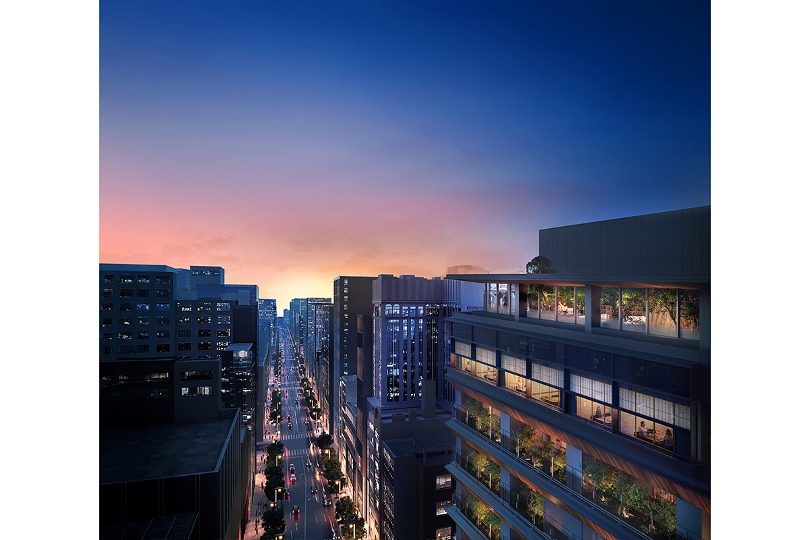
Сеть небольших роскошных гостиниц Fufu начиналась с онсэна в Атами. В ноябре 2025 года она открыла отель на главной улице Гиндзы, и вода из Атами наполняет ванну в каждом из 34 номеров.
Место
Курорт у первого перекрёстка
Fufu это японская сеть небольших роскошных гостиниц, которые стоят в живописных местах по всей стране. Первая открылась в Атами, курортном городе с горячими источниками на побережье префектуры Сидзуока (статья о Fufu Atami). Для нового отеля сеть выбрала Гиндзу, самый элегантный торговый район Токио. Fufu Токио Гиндза открылся 16 ноября 2025 года в здании на перекрёстке первого квартала Гиндзы, на главной улице Тюо-дори, где стоят магазины мировых марок.
Отель напрямую соединён со станцией метро Гиндза-иттёмэ. Сеть называет такие гостиницы японскими курортами: это не рёкан и не обычный отель, а нечто третье. Стоит войти внутрь, как шум улицы отступает, вокруг мягкий свет и запах дерева, а в интерьере есть сад с цветущими деревьями и сезонные растения.
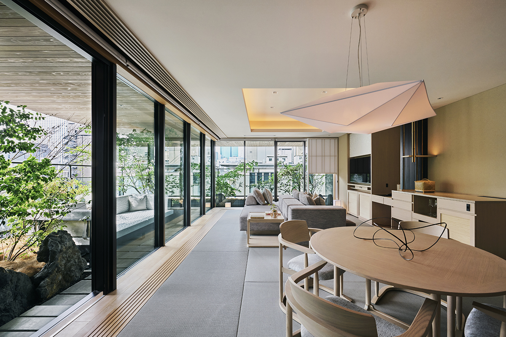
Гостиничная обозревательница, которая одной из первых провела здесь ночь в 2025 году, проснулась ещё до пяти утра. Она смотрела, как над пустой Тюо-дори светлеет зимнее небо и между домами, окрашенными в золото, поднимается солнце. Такого вида на главную улицу Гиндзы без прохожих она прежде не видела. Утром её ждали онсэн и японский завтрак, продуманный до мелочей.
Искусство
Память о городе воды и ив
У входа гостей встречают бамбуковая изгородь и глинобитная стена с черепицей. Эти работы рассказывают о традициях, которые шли из Эдо в Токио. На лифте гости поднимаются наверх, в лобби. В лобби камень комацу-иси, один из трёх знаменитых камней Японии, выложен как сухой сад камней.
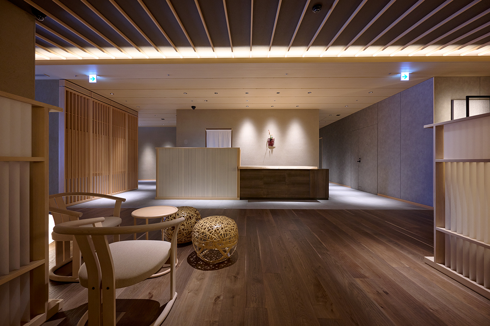
На входе на 12-м этаже висят четыре полотна «Ткань четырёх сезонов», окрашенные илом Гиндзы. Их сделал магазин кимоно «Гиндза Мотодзи», основанный в Гиндзе в 1979 году. Он занимается кимоно на всех этапах, от разведения шелкопряда до окраски ткани.
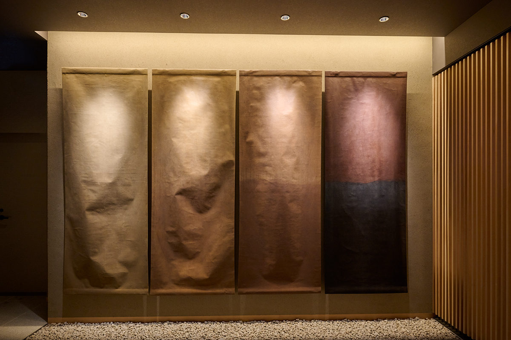
Символ отеля и его цвета тоже взяты из истории района. В эпоху Эдо Гиндза лежала к югу от внешнего рва замка Эдо, и её пересекали рвы и каналы: это был город воды. Позже каналы исчезли. При перестройке квартала в кирпиче в эпоху Мэйдзи вдоль улиц посадили ивы, чтобы защитить город от пожаров и украсить его. Ивовые аллеи стали символом открытия Японии Западу, но почти все деревья погибли во время бомбардировок Токио в годы войны. По просьбе жителей и торговцев ивы Гиндзы посадили снова в 1955 году.
Поэтому символ отеля соединяет «память воды», «иву» и «город света и брендов». Фирменных цветов четыре: чёрный Fufu, эдо-мурасаки (фиолетовый цвет эпохи Эдо), ивовый зелёный и хивада, цвет коры кипариса хиноки.
Номера
Онсэн и сад в каждом номере
В отеле 34 номера, и среди них нет двух одинаковых, как и в других гостиницах Fufu. Площадь от 55 до 160 квадратных метров. В части номеров устроены столовые, и ужин можно заказать в номер.
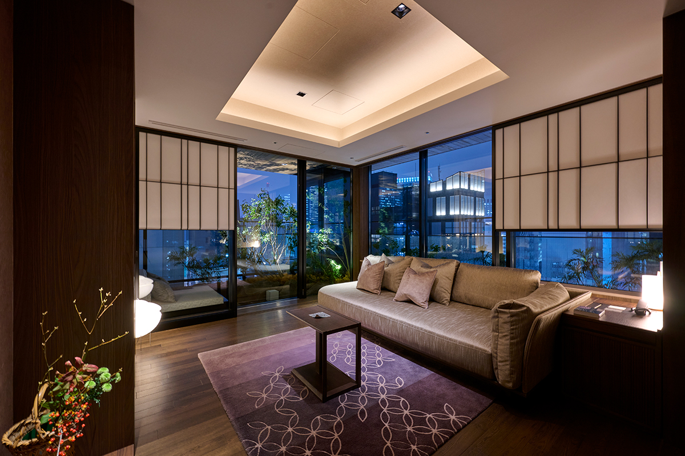
В каждом номере есть ванна с природной горячей водой. Её каждый день привозят из Атами, города, с которого началась сеть. Воду Атами любил Иэясу Токугава (1543–1616), основатель сёгуната Токугава, который правил Японией больше двух с половиной веков: по преданию, он приказывал доставлять её в замок Эдо. Атами издавна считают тихим курортом для жителей Канто, и эта вода приносит его дух в центр Токио.
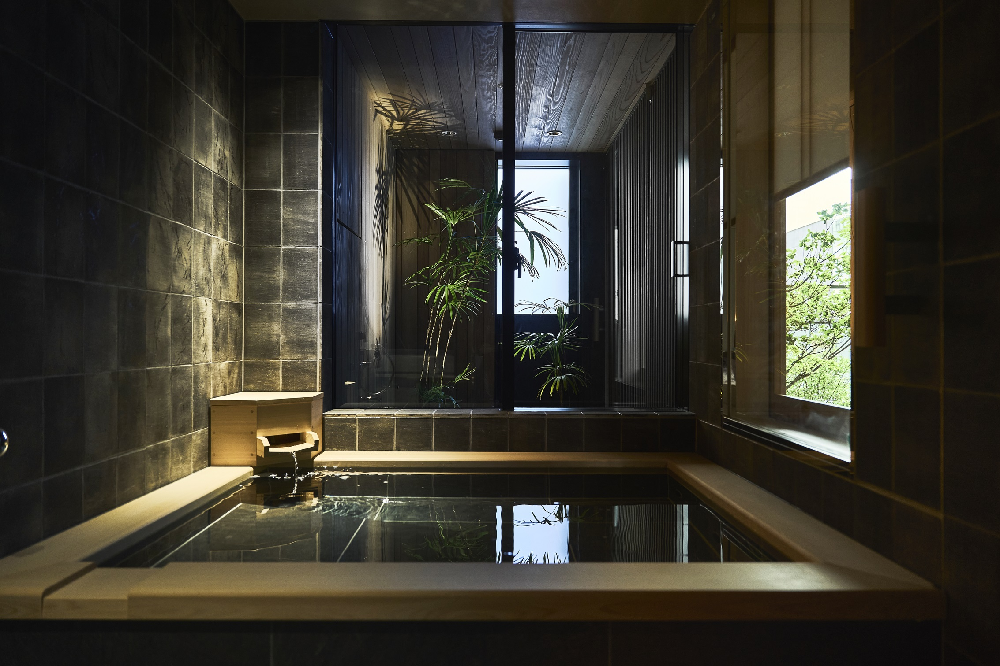
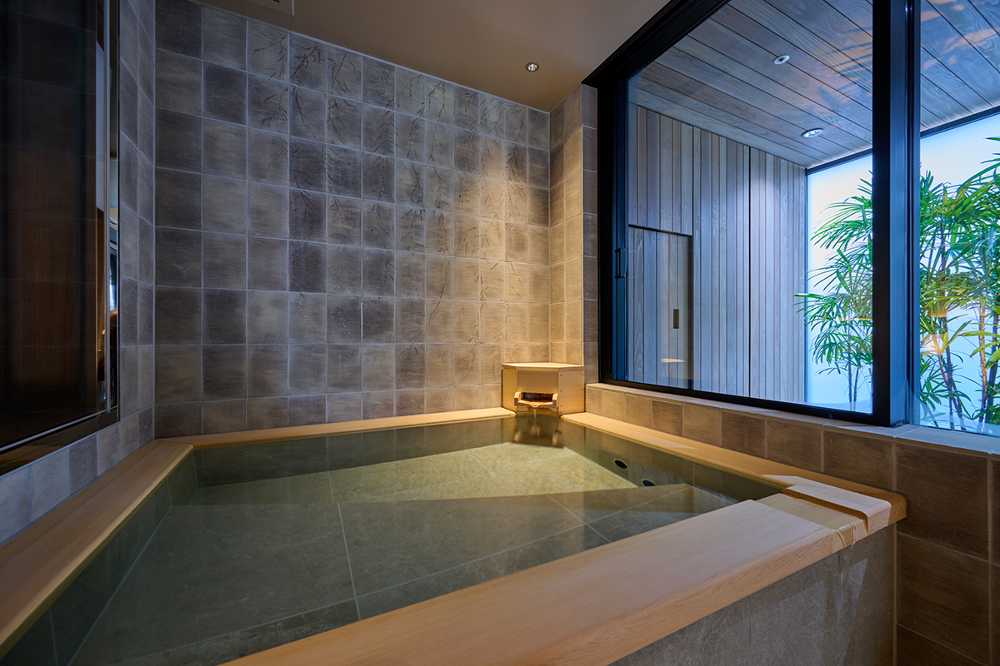
Хотя номера находятся высоко, на террасе каждого устроен сад. Сотрудники отеля объясняют, что в Токио номера названы в честь цветущих деревьев и именное дерево каждого номера растёт в его саду. В угловом люксе площадью 115 квадратных метров это плакучая сакура бэни-сидарэ.
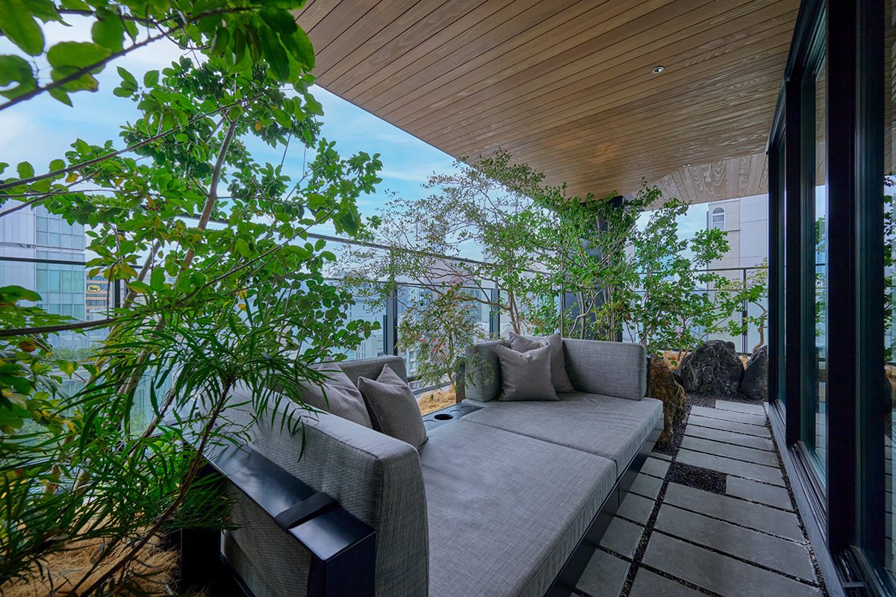
Крыша
Лаунж «Юсора»
На последнем этаже, среди сада на крыше, устроен лаунж «Юсора». У диванов в окружении деревьев есть отдельные ванночки для ног с водой из Атами. Здесь под спокойную музыку отдыхают, глядя на небо над Гиндзой. В 2025 году лаунж работал с 7:00 до 23:00, а с 16:00 до 20:00 напитки наливали без ограничений.
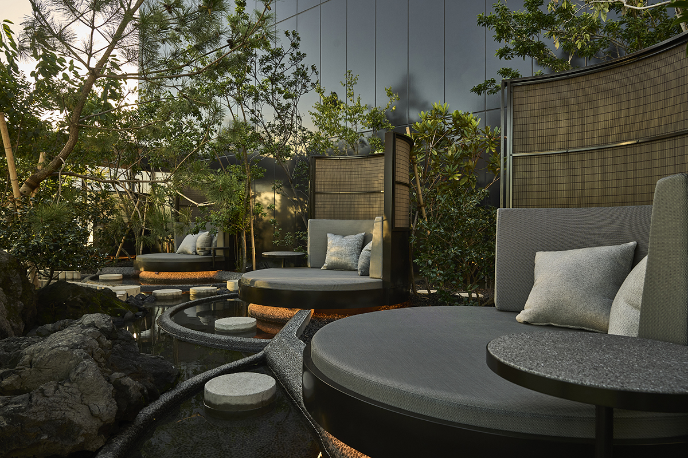
Кухня
Ресторан «Гиндза Гаю»
В ресторане японской кухни «Гиндза Гаю» подают сезонные курсы из продуктов разных областей Японии. Название сложено из слов «изящество» и «игра»: смена сезонов, которую чувствуешь всеми органами чувств, и японская кухня с выдумкой. Для посуды тоже искали блеск и красоту. Отдельные залы ресторана, как и номера, названы по деревьям и цветам.
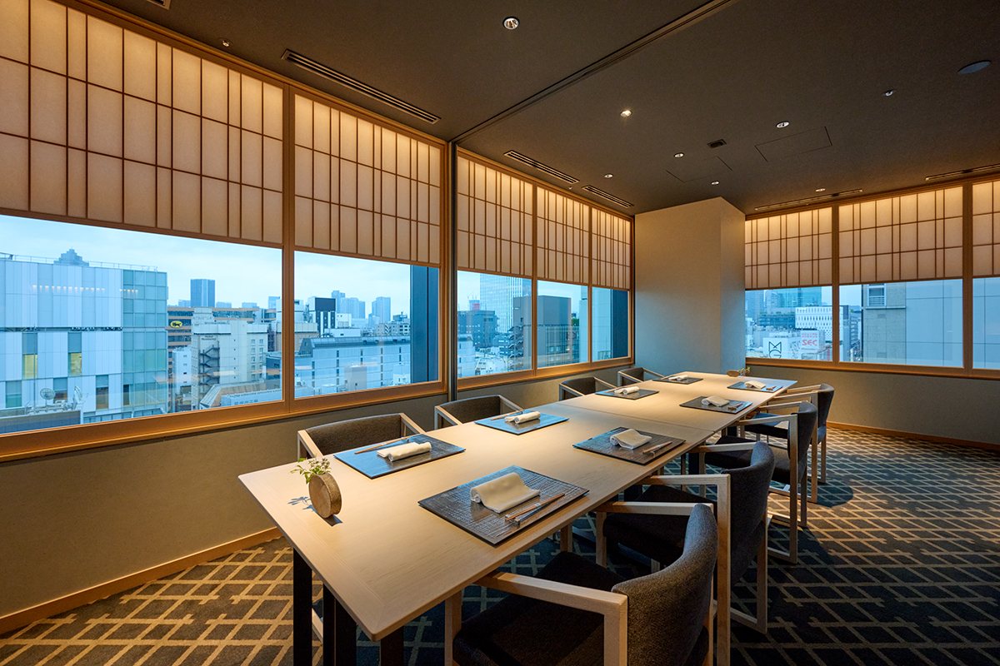
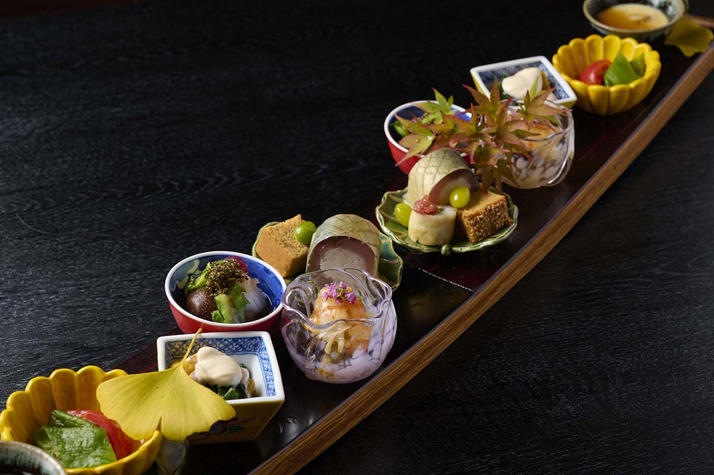
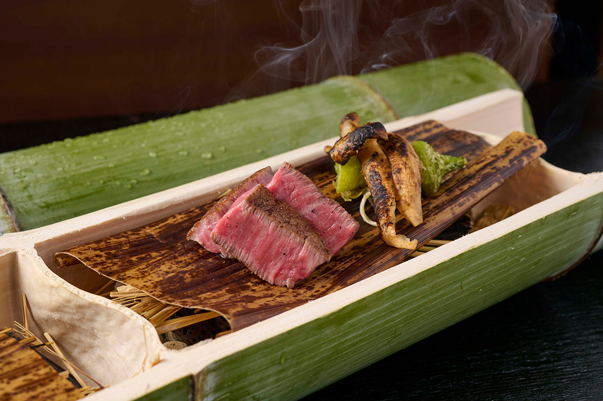
Fufu Токио Гиндза
- Адрес
- Токио, Тюо, Гиндза, 1-7-10
- Как добраться
- станция метро Гиндза-иттёмэ (линия Юракутё), выход 6 ведёт прямо в здание
- Номера
- 34 (11 типов, от 55 до 160 м²)
- Цены / Вход
- от 115 000 иен за номер на двоих за ночь, с налогом и сервисным сбором (2025)
- Сайт
- fufutokyo.jp
Фото: Хироси Абэ.